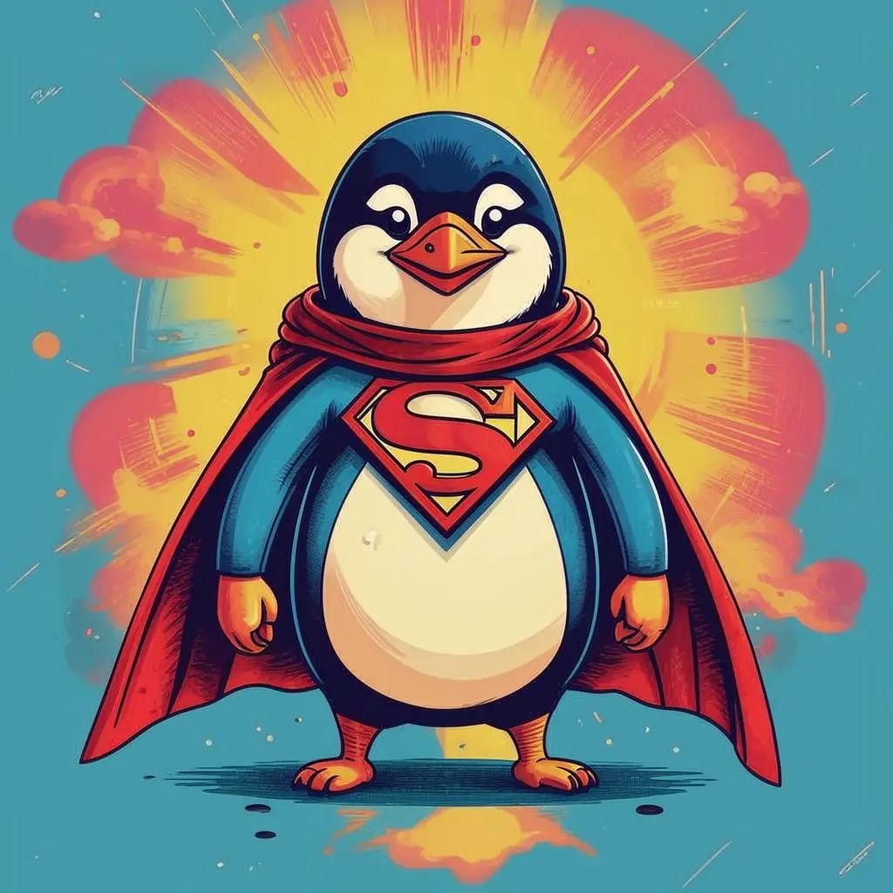

Проект Татьяны Ступак 803

О себе:
Привет! Меня зовут Таня, и я мечтаю стать web-программистом, когда вырасту!😂
-
Домашняя работа №1
Сегодня мы работаем с языком гипертекстовой разметки HTML
- Создаем в проекте файлы index.html и task1.html
- В файле index.html делаем ссылку на файл task1.html
- Редактируем файл task1.html, с использованием основных html-тегов
- Загружаем html-файлы и все вспомогательные файлы для выполнения задания на хостинг
- Публикуем результат (ссылку на созданную страницу, два скриншота сайта) в LMS Odin
-
Домашняя работа №2
Сегодня мы работаем с каскадными таблицами стилей CSS
- Создаем в проекте директорию по адресу pages/task2, в ней - файлы task2.html и style.css
- В файле index.html делаем ссылку на файл task2.html
- Подключаем стили к файлу task2.html
- Редактируем файлы task2.html и style.css таким образом, чтобы на странице были отображены все элементы в соответствии с образцом (цвета и шрифты могут отличаться)
- Загружаем html- и css-файлы, а также все вспомогательные файлы для выполнения задания на хостинг
- Публикуем результат (ссылку на созданную страницу, скриншоты сайта и кода) в LMS Odin
-
Домашняя работа №3
Сегодня мы работаем с Flex, Grid и позиционированием
- В новой директории pages/task3 создаем файлы для нашего очередного проекта
- Подключаем к html-файлу 2 файла со стилями: как обычно - style.css и новый - reset.css
- Верстаем страницу с использованием Flex и Grid, отрабатываем примеры с позиционированием
- Загружаем новый проект на хостинг
- Публикуем результат (ссылку на созданную страницу, скриншоты сайта и кода) в LMS Odin
-
Домашняя работа №4
Медиа-запросы и Bootstrap
- Работаем в новой директории pages/task4
- Выполняем адаптацию сайта любым способом (Flex, Grid, Bootstrap) под различные разрешения экранов (мобильные устройства, планшеты, ПК)
- Загружаем новый проект на хостинг
- Публикуем результат (ссылку на созданную страницу, скриншоты сайта и кода) в LMS Odin
-
Домашняя работа №5
Условия и циклы JS. Бургер-меню на JS
- Работаем в новой директории pages/task5
- Реализуем бургер-меню в JS
- Загружаем новый проект на хостинг
- Публикуем результат (ссылку на созданную страницу, скриншоты сайта и кода) в LMS Odin
-
Домашняя работа №6
Слайдер на JS
- Работаем в новой директории pages/task6
- Реализуем слайдер с отзывами в JS
- Стилизуем слайдер через CSS
- Загружаем новый проект на хостинг
- Публикуем результат (ссылку на созданную страницу, скриншоты сайта и кода) в LMS Odin
-
Итоговая работа
Итоговая работа!
- По максимуму показываем всё, чему научились!
- Загружаем новый проект на хостинг
- Публикуем результат (ссылку на созданную страницу, скриншоты сайта и кода) в LMS Odin